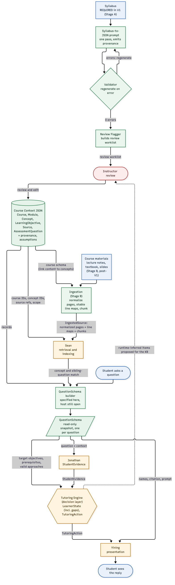

Digital Professor · Ovunc's part
Turning a course syllabus into a structured, linked course knowledge base and a per-question target the tutor can teach against — with a validation pipeline, a provenance/trust model, and a worked Calculus I example.
What the Course Context module is responsible for, and what it hands to the rest of the system.
Course Context is the structured, linked description of one course that the rest of the Digital Professor reads. It is produced once per course from course materials, reviewed by a human, and then consumed read-only. The module owns two outputs:
provenance + a logged assumptions listDocumented across three files: course-context.md (the spec), course-context.validation-and-flagging.md (the tools), and course-context.example-calc1.md (the worked example).
One syllabus in, one reviewed knowledge base out, plus the per-question targets and the (post-V1) ingestion layer that feeds retrieval.
a syllabus (PDF or pasted text)
one JSON object in a single pass; emits provenance
conformance rules; regenerate on error
build a human review worklist
human checks, then read-only

The QuestionSchema builder runs separately, per student question, against the published knowledge base. The Ingestion (Stage B) layer — lecture notes/textbook → normalized pages + line maps + chunks — feeds Sean's retrieval (see §8).
Six linked record types. Concept is the hub.
The chain Course → Module → Concept → LearningObjective / Source / AssessmentQuestion is a reading order, not the storage layout. Objectives, sources and questions all attach to a Concept; a question reaches its sources only through its concepts; prerequisites are Concept→Concept links (acyclic).
| Record | Key fields |
|---|---|
| Course | id, title, level, duration_weeks, assumed_background, module_ids[] |
| Module | id, course_id, title, goal, weeks, concept_ids[] |
| Concept | id, module_id, name, summary, key_definitions[], prerequisite_ids[], objective_ids[], difficulty_notes[{misconception, mitigation}], source_ids[], question_ids[] |
| LearningObjective | id, concept_id, text, bloom_level |
| Source | id, type, citation, section, text_chunk |
| AssessmentQuestion | id, concept_ids[], objective_ids[], type, difficulty, prompt, solution, rubric, common_wrong_answers[], requires_figure |
Records link by id, so the whole context around any item is one lookup plus a few link-follows — exactly what the builder needs to assemble a target on demand. A small additive field, provenance, rides on every record (schema 1.1).
A syllabus-only file is a skeleton with plausible content on it. Provenance makes the difference explicit.
source_backedEvery non-structural value on the record is stated in, or mechanically copied from, the supplied material.
ai_inferredAt least one value was generated by the model beyond what the material states.
Weakest-link rule. A record's provenance is the weakest of its non-structural fields. In a syllabus-only file, structure, order and citations are source-backed; summaries, definitions, objectives, prerequisites, difficulty notes, questions and solutions are not.
provenance field, the assumptions log (one entry per inference — what was inferred, on which field, and why), and the human review checklist. The model never leaves a field blank or "TBD" — it infers a value and logs the inference.Two tools sit between generation and publishing — specified in course-context.validation-and-flagging.md.
the prompt emits JSON
0 errors? else discard & regenerate (capped)
builds a per-file review worklist
check, edit, publish
"TBD"; assumptions resolve (V-09–V-11)assumptions entryThe target for one question: what a fully correct solution requires. Built from Course Context + the specific question, then frozen and handed to the Tutoring Engine.
| Field | Meaning |
|---|---|
concept_ids, learning_objectives | which concept(s) the question tests, and their objectives (copied verbatim) |
prerequisite_concepts | the direct prerequisites a student must already be able to use |
correct_approach + alternative_approaches | the canonical technique (+ justification), plus other valid ones |
reference_answer | the full worked answer — access-restricted, never shown to the student |
common_misconceptions | misconceptions to watch for, each with an observable cue |
source_reference | where the question is grounded in the course material |
provenance, built_from | trust level + the exact Course Context (SHA-256) used, for replay |
The schema is not hand-written — every field is a lookup or a machine-checked build against the knowledge base. A bank question copies its fields; a runtime (student-typed) question gets an ad-hoc id and the builder writes & checks the solution (e.g. for an integral, by differentiating it back).
Course materials play two roles, and enter at two different stages.
| Role | Materials | Stage | Produces |
|---|---|---|---|
| Structural input | syllabus / course breakdown | A — structure build V1 | the Course Context skeleton + Source references |
| Content input | lecture notes, textbook, slides | B — content ingestion post-V1 | normalized pages + stable line maps + versioned chunks |
Source references so Sean's retrieval can ground on it.page/line mappings under a content_version, and versioned chunks linked back to Source/Concept (proposed as the IngestedSource record).(document, version, page, line_start–line_end) always resolves to the same passage and a highlight link can open and highlight it — even after the document is re-ingested. Think "line numbers pinned to a commit."A real course generated directly from a one-page syllabus (AS.110.106), in course-context.example-calc1.md.
A student types $\int x\cos(x)\,dx$. It's not in the bank, so the builder runs the runtime path: match the concept (integration by parts), copy objectives & misconceptions, write and differentiate-check the answer.
{
"question_id": "calc1.06-integral-applications.by-parts.adhoc-d7df1b60",
"origin": "runtime",
"concept_ids": ["calc1.06-integral-applications.by-parts"],
"prompt": "\\int x\\cos(x) dx",
"correct_approach": {
"technique": "Integration by parts with u = x and dv = cos(x) dx",
"justification": "x and cos(x) have no derivative relationship, so the
substitution test fails; u = x simplifies under differentiation (LIATE)."
},
"reference_answer": "x sin(x) + cos(x) + C. Check: d/dx[...] = x cos(x). ",
"common_misconceptions": [
{ "description": "Choosing u, dv so the new integral is harder.",
"cue": "Sets u = cos(x), dv = x dx; the new integral gets worse." },
{ "description": "Reaching for u-substitution because an x sits next to a
trig factor, without the derivative-relationship check.",
"cue": "Tried u = cos(x) or u = x^2 and it did not simplify." }
],
"prerequisite_concepts": ["substitution", "product-quotient"],
"provenance": "ai_inferred",
"built_from": { "course_context_schema_version": "1.1", "content_sha256": "617281d1…" }
}Handed to the Tutoring Engine, this one record is enough to run a Socratic session: compare the student's approach to correct_approach, probe the prerequisite_concepts, and watch for each misconception's cue. The worked example traces a 13-turn session on this exact integral — a problem that looks like substitution but needs integration by parts.